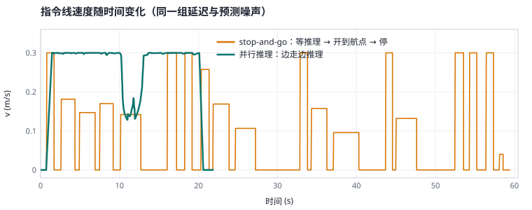
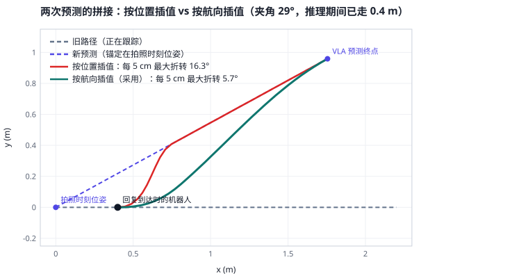
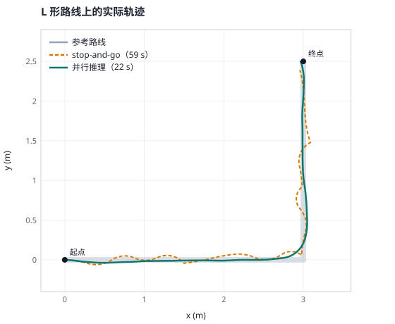

并行推理与平滑轨迹：功能详解
navgpt_g1d（deploy/g1d/）如何让 NavGPT VLA 在宇树 G1-D 上边推理边行驶，并保证前后两次推理之间轨迹连续、平滑
1. 一页纸总结
核心思想：推理和执行解耦。20 Hz 的控制线程始终沿着一条“参考路径”行驶，从不等待模型；推理线程在后台不停地把最新相机帧送给 VLA，每收到一次预测，就把它锚定到里程计坐标、和当前路径平滑拼接，替换掉参考路径。底盘从而不会因为等推理而停下，前后两次预测之间也不会出现折角或跳变。
| 要解决的问题 | 做法 | 代码 |
|---|---|---|
| 回复到达时机器人已经走开了 | 用拍照时刻的位姿把航点转到里程计坐标 | PoseBuffer.at、path_from_waypoints |
| 旧回复乱序、迟到 | 请求序号去重，拍照超过 3 s 的回复丢弃 | Navigator.on_reply |
| 两次预测形状不同 | 0.5 m 内在航向空间过渡，从机器人位置积分出路径 | path.splice |
| 新预测起点不在机器人处 | 终点误差沿全程平滑分摊，终点仍对准预测 | path.splice |
| 推理更频繁后历史帧太密 | 每 0.25 m / 15° 才提交一帧进 VLA 历史 | Navigator.next_request、serve_vla.act_without_commit |
| 速度突变、蛇形 | 纯追踪 + 曲率/刹停/最大速度三重限速 + 加速度限幅，中间航点不停不对齐 | tracker.py |
| Wi-Fi 卡顿 | 路径缓冲约 1 m；1.5 s 无回复限速 0.1 m/s，3 s 停车 | Navigator.control |
| 安全 | 激光减速区与停止区；保护停止立即生效，区域清空后用新鲜帧恢复 | safety.py、authority.py、episode.py |
2. 问题：为什么会一卡一卡
最直接的做法是串行循环：取图 → 调 /act → 开到第 2 个航点 → 停 → 再取图。每走 0.25–0.4 m，机器人都要经历“停着等推理 → 加速 → 接近航点时减速到零 → 对齐朝向 → 零速保持”。实测部署里一步大约 4–5 s，平均速度只有 0.06–0.08 m/s，看起来一顿一顿的。
关键认识：VLA 给的 8 个航点是一个约 1 m 的局部规划，下一次推理马上会重新规划。把其中某一点当成必须精确停住、对准朝向的目标，既没必要，又正是卡顿的来源。

3. 总体架构与线程
两个循环共享一个 Navigator 对象，用一把锁保护。Navigator 本身不含线程（navigator.py），线程由 episode.py 创建。这样调度逻辑可以在不起线程的情况下用运动学仿真做单元测试。
4. 时间与坐标：按拍照时刻锚定
4.1 位姿历史 PoseBuffer（pose_buffer.py）
slamware 里程计约 10 Hz，控制 20 Hz，而一次回复要在拍照后 0.3–2 s 才回来。PoseBuffer 保存最近 5 s 的位姿，提供两个查询：
at(t)：在相邻两个样本之间线性插值（偏航角走最短弧，跨 ±π 也正确），超出范围时取端点。推理线程用它查“拍照时刻”的位姿：t_capture = 帧接收时刻 − camera.latency_s（默认 0.06 s，需要实测）。predict(now)：取最新样本，按上一条速度指令做最多 0.3 s 的航迹推算。控制线程用它，避免拿一个 100 ms 前的位姿去算控制量。
相机帧和里程计样本都在机器人本机用同一个单调时钟打时间戳，所以不需要在 5090 主机和机器人之间做时钟同步。
4.2 航点锚定公式（path.path_from_waypoints）
VLA 输出 8 个累积航点 (xk, yk, θk)，表达在拍照那一刻的机体系里（+x 前、+y 左、θ 逆时针）。设拍照时刻位姿为 (px, py, pθ)：
再把“拍照时刻位置 + 8 个航点”连成折线，去掉重复点，按 ds=5 cm 等弧长重采样，得到参考路径 RefPath（点列 + 累积弧长 + 终点朝向）。无论回复多晚到，这条路径在世界坐标里都是对的，这是后续拼接的基础。
5. 两次推理结果的接续（Navigator.on_reply + path.splice）
5.1 请求序号与过期
每个请求有递增的 seq。回复被丢弃的情况：seq 不大于已应用的 seq（乱序或迟到）；拍照时刻早于最近一次恢复的时刻（保护停止期间拍的旧帧）；拍照已超过 max_reply_age_s=3 s；任务已结束。被接受的回复会更新 last_reply_time（用于断供判断，见第 8 节）和到达计数。
5.2 裁剪已走部分
推理期间机器人沿旧路径走了一段，新预测的起点（拍照位置）已在机器人身后。把机器人当前位置投影到新路径上，取最近点的弧长 s*，只保留 s* 之后的部分 new_r。如果机器人已经越过整条新预测（预测很短，说明 VLA 认为该减速），路径就退化成机器人所在的一个点，跟踪器随之平滑减速。
5.3 航向空间过渡
把旧路径也从机器人投影点裁剪成 old_r，两者都从“机器人所在处”开始按弧长 s 参数化。对每一小段计算切向角（展开为连续角度，并把旧路径的角度对齐到同一个 2π 周期），在 blend_m=0.5 m 内按 smoothstep 权重插值：
然后从机器人位置出发逐段积分出新路径：P(s+Δs) = P(s) + Δs·(cos ψ, sin ψ)。smoothstep 在两端导数为零，所以曲率在过渡段两端都是连续的：起点处与正在跟踪的方向相切，终点处与新预测的方向相切。blend_m 不小于跟踪器的前视距离，因此控制量计算时看到的始终是已经平滑过的那一段。
5.4 终点误差分摊
积分出的路径形状正确，但终点会偏离新预测的终点：机器人此刻不在新预测的起点上，偏差来自推理期间的移动和两次预测的差异。把这个误差 e = Pnew,end − P(L) 沿整条路径按 smoothstep 权重分摊：
结果是：路径从机器人出发、起始方向与当前行驶方向相切、终点正好落在 VLA 预测的位置，偏差在约 1 m 的全程内慢慢消化，中途没有急转。
5.5 为什么不用位置插值
最初的实现直接在相同弧长处对两条路径的位置做插值。问题在于：两条从同一点出发、夹角不同的射线，混合权重随 s 变化时会产生额外的横向速度项 s·a'(s)·(unew−uold)，路径会先冲过头再拐回来。下图是测试用例“新预测与旧路径夹角 29°、推理期间已走 0.4 m”：

此外还会计算拼接偏差：在机器人前方 1 m 内，新旧两条路径的最大距离。它写进日志的 deviation_m，用来判断 VLA 前后两次预测是否一致：持续偏大，说明模型输出在抖。
6. 视觉历史关键帧
NavGPT VLA 的训练数据里，历史帧大约每 0.25 m 前进或每 15° 转向才有一帧（对应 Habitat 的离散动作）。并行推理以后请求频率由推理速度决定；如果每帧都进历史，帧会比训练分布密得多。
Navigator.next_request 的规则：第一帧必定提交；之后只有相对上一次提交的帧移动 ≥ keyframe_m=0.25 m 或转动 ≥ keyframe_rad=15° 时，才设置 commit=true。服务端在 commit=false 时调用 act_without_commit：先把这帧临时追加为当前观测，预测完再从历史和帧缓存里移除。所以每次预测都能用上最新画面，而历史帧的间距仍贴近训练分布。
committed_frames / replies 可以帮助判断。7. 路径跟踪与平滑（tracker.py）
7.1 纯追踪
每个控制周期：把机器人投影到参考路径上得到弧长 sr，剩余长度 R = L − sr。在路径上取前视点 P(sr + Ld)：
7.2 三重限速
- 曲率限速 wmax/|κ|：转弯越急越慢，角速度永远不超过 wmax（图 1 中 10–13 s 的减速就是 L 形拐角）。
- 刹停限速：保证在参考路径用完之前能以 adec 停下。路径正常刷新时剩余约 0.7–1 m，这一项不起作用；只有预测断供或接近终点时才减速。
- 外部限速 v_cap：来自安全层的减速区和断供限速，同时按比例缩放 w 以保持曲率。
7.3 加速度限幅
目标值不直接下发，而是以加速度上限逼近：|v| 增大时每拍最多变化 amax·dt（0.4 m/s²），减小或换向时最多 adec·dt（0.6 m/s²）；角速度每拍最多变化 alphamax·dt（1.2 rad/s²）。这里的 dt 是实测的控制间隔，限定在 [0.2, 3] 倍标称周期之内；控制循环落后超过一个周期时重新对齐节拍，不连续补拍。这是调试中发现的问题：如果用固定 50 ms 算限幅，调度抖动会让实际加速度超标（曾测到 0.97 m/s²）。
7.4 原地转向与滞回
G1-D 是差速底盘，不能横移。前视方位 |α| 大于 rotate_enter=1.0 rad 时进入原地转向，w = clip(krotate·α, ±wmax)；直到 |α| 小于 rotate_exit=0.35 rad 才退出。两个阈值形成滞回，避免在“边走边转”和“原地转”之间来回抖。预测路径短于 min_path_m=8 cm 时视为纯转向指令，直接转到预测的终点朝向。
7.5 停车与到达
- 中间航点：不停车，不对齐朝向。剩余路径小于
goal_tol且不是最终路径时，目标速度为 0，等待下一次预测；正常情况下新路径早已到达，不会走到这一步。 - 到达判定：VLA 不会输出 STOP。最后一个航点距离小于 0.25 m 且角度小于 30° 视为“视野收敛”，连续两次收敛（
arrival_hits=2）才把当前路径标记为最终路径。 - 最终路径：按刹停限速减速到路径终点，进入 0.10 m 范围后原地对齐到预测的终点朝向（误差小于 0.10 rad），速度与角速度都降到接近零后，判定任务完成。
8. 无线断供与容错
| 情况 | 行为 | 参数 |
|---|---|---|
| 回复正常到达 | 路径缓冲约 1 m（8 个航点），以 0.3 m/s 行驶约 3 s，足以覆盖 0.3–1.2 s 的往返延迟 | — |
| 距上次接受回复超过 1.5 s | 速度上限降到 0.1 m/s（通过 v_cap，平滑减速） | starve_s、starve_speed |
| 超过 3 s | 清空参考路径，按 adec 停车，等待新预测 | stop_s |
单次 /act 失败 | 记录 act_failed，0.2 s 后重试；机器人继续沿当前路径走 | — |
| 连续 10 次失败 | 任务以 error 结束，底盘置零并释放 | — |
| 相机帧超过 0.3 s 未更新 | 该次不发请求（等新帧），控制线程照常 | camera.stale_after_s |
| 里程计超过 0.5 s 未更新 | 立即置零，任务以 odom_lost 结束 | episode.odom_timeout_s |
断供计时从“最后一次收到有效回复”算起，而不是从拍照时刻算起。早期版本从拍照时刻算，一次请求在途时“年龄”天然会涨到两倍延迟，仿真里有一半时间被误判为断供，平均速度只有 0.17 m/s；改正后为 0.24–0.27 m/s。
9. 安全层与运动授权
9.1 激光保护区（safety.py）
- 激光点先按安装位姿（
lidar_x/y/yaw）转到底盘坐标，过滤小于 0.12 m 的自身回波。 - 前向走廊内最近的障碍距车头 d：d < 0.35 + v·0.3 时触发保护停止；d < 1.20 时限速 max(0.05, vmax·(d−0.35)/0.85)，让机器人提前平缓减速，而不是贴近才急刹。
- 原地转向（|v|<0.02 且 |w|>0.05）时，旋转圆 0.42 m 内有点即停。
- 激光数据超过 0.5 s 未更新，视为不安全，直接停。
9.2 运动授权与恢复（authority.py、episode.py）
按论文附录 B.4 实现：同一时刻最多一个操作持有“运动授权”。每次授予或撤销，版本号都会递增，命令只有在当前版本下才会被转发。保护停止的流程：
- 安全层判定停止 →
protective_stop立即撤销授权，Navigator.halt()把跟踪器速度清零。这一步绕过平滑，是刻意设计的急停。 - 推理线程照常运行，但回复不再生效：授权被撤销，控制线程只发零。
- 检测区连续清空
resume_clear_s=1.0 s 后：清除保护停止，重新授予一个新版本的授权，并调用Navigator.resume(now)。只接受恢复之后拍的帧给出的预测；非最终路径会被清空，从零速开始按加速度限幅重新起步。
在全链路仿真中，一名行人从侧面横穿路线：机器人保护停止约 3 s，恢复后等待约 1.2 s 拿到新鲜预测，然后继续完成任务。
10. 底盘指令发布（dds.CmdVelStreamer）
| 机制 | 说明 |
|---|---|
| 固定频率发布 | 独立线程以 30 Hz 向 rt/cmd_vel_no_limit 写 geometry_msgs/Twist_（linear.x = v·cmd_x_sign，angular.z = w·cmd_yaw_sign） |
| 只在占用期间发布 | activate() 之后才发；不占用时完全不写，通道留给遥控器 |
| 死人开关 | 控制线程超过 0.3 s 没有调用 set()，就改发零速。控制循环卡死时底盘会自己停下 |
| 结束释放 | release(zero_hold_s=1.0)：先发 1 s 零速确认停稳，再停止发布，交还通道 |
| 网卡绑定 | init_dds 支持 interface_ip：把 CycloneDDS 配置里的 name= 改成 address=，按 IP 绑定网卡，避免 DDS 走到 Wi-Fi 网卡上 |
控制线程 20 Hz 计算、发布线程 30 Hz 发送，两者解耦：发布频率不受计算耗时影响，底盘收到的指令流稳定。
11. 一次任务的生命周期（EpisodeRunner.run）
- 等待里程计（最多 3 s）→ VLA
/reset→ 占用 cmd_vel 通道 → 授予运动授权 → 启动推理线程。 - 控制循环，每个周期依次检查：外部停止请求、超时（300 s）、推理线程致命错误、里程计新鲜度、安全层，然后计算并下发速度、写日志、做卡住检测。
- 结束：撤销授权 → 置零 → 等待推理线程退出 → 零速保持 1 s 后释放通道 → 写结果。
| 结束状态 | 触发条件 |
|---|---|
arrived | 连续两次收敛预测，并完成最终停车与朝向对齐 |
stopped | Ctrl-C 或 HTTP POST /stop |
timeout | 超过 max_time_s |
stuck | 有运动指令（|v|≥0.05 或 |w|≥0.1）但 4 s 内位移不到 5 cm 且转角不到 0.1 rad（dry-run 时关闭） |
odom_lost | 里程计超过 0.5 s 未更新 |
error | VLA 连续失败 10 次、请求数超上限或异常 |
同样的流程可以通过 HTTP 接口驱动：POST /episode 启动（已有任务运行时返回 409），POST /stop 停止，GET /status 查看实时位姿、速度、回复数、保护停止原因和最终结果。
12. 日志、指标与调参
每次任务写 logs/<时间戳>/events.jsonl，以及提交帧的 JPEG（frames/）。事件类型有：start、cmd（每个控制周期的 v、w、dt、位姿、v_cap 与阶段）、reply（seq、是否提交、是否接受、往返延迟、推理耗时、拼接偏差、航点）、protective_stop、resume、act_failed、exception、result。
python -m navgpt_g1d report <日志目录> 会输出：
| 指标 | 含义与用途 |
|---|---|
phase_s | 各阶段时长：running / obstacle_slow / protective_stop / resuming |
mean_speed_mps、stall_ratio | 行驶段平均速度；正常行驶阶段速度低于 0.03 m/s 的比例（卡顿程度） |
max_accel_mps2、max_ang_accel_rps2 | 正常行驶阶段的最大加速度与角加速度（按控制器实际 dt 计算，不含保护急停） |
latency_p50/p95_s、infer_p50_s | 拍照到回复的往返延迟、服务端纯推理耗时，两者之差约为网络与编解码开销 |
accepted_ratio、committed_frames | 回复被接受的比例；提交进历史的帧数 |
splice_deviation_p95_m | 前后两次预测在前方 1 m 内的偏差，反映模型输出是否稳定 |
调参建议
| 现象 | 先调什么 |
|---|---|
| 停顿比例高、断供时间长 | 看 latency_p95_s：网络慢就改善 Wi-Fi（5 GHz 专用 AP）、降低 jpeg_quality；推理慢就检查 5090 上的注意力实现 |
| 转弯外甩或蛇形 | 减小 lookahead_time，或增大 w_max（底盘上限 0.6）；看 splice_deviation 是否偏大 |
| 起步、刹车太猛 | 减小 a_max / a_dec；刹车距离 v²/(2adec) 会随之变长 |
| 频繁原地转 | 增大 rotate_enter；或者 VLA 本身在给大转角，看日志里的航点 |
| 想提速 | 先提高推理频率，再按 vmax ≲ 0.25 m × 频率 提高 vmax，同时确认 slow_dist_m 足够 |
| 人走过时停顿过多 | 减小 slow_dist_m 或 resume_clear_s（以安全为前提） |
13. 验证结果
13.1 运动学闭环仿真（tests/test_navigator_sim.py）
设置：L 形路线 5.5 m；模拟 VLA 按拍照时刻的真实位姿给出 8 个航点（间距 0.15 m，加噪声）；往返延迟 0.4–1.2 s，另有 8% 概率出现 2.5 s 无线卡顿；里程计 10 Hz，控制 20 Hz，vmax 0.3 m/s。
| 随机种子 | 0 | 1 | 2 | 3 | 4 | 5 |
|---|---|---|---|---|---|---|
| 并行推理用时 (s) | 26.0 | 21.9 | 22.4 | 21.6 | 27.6 | 24.1 |
| 行驶平均速度 (m/s) | 0.24 | 0.27 | 0.27 | 0.26 | 0.25 | 0.26 |
| 断供时间占比 | 14% | 0% | 0% | 5% | 15% | 10% |
| stop-and-go 用时 (s) | 59.1 | 59.5 | 61.6 | 56.8 | 55.3 | 57.5 |
预测正常到达期间，所有种子的停顿比例都是 0%。种子 0 和 4 抽到了连续的 2.5 s 卡顿，机器人按设计先降速、再停车，恢复后继续。表中 stop-and-go 基线已经去掉了零速保持和中间朝向对齐，比真实的串行实现更快，实际差距会更大。

13.2 多线程全链路仿真（tests/test_episode_sim.py、navgpt_g1d sim）
真实时间运行全部线程：仿真底盘有 0.15 s 一阶响应延迟，里程计 10 Hz 带噪声，360 线激光，有移动障碍物。
| 场景 | 结果 | 平滑度（正常行驶阶段） |
|---|---|---|
| L 形 5.5 m + 行人横穿 | 29.4 s 到达，终点误差约 3 cm；保护停止 3.0 s，恢复等待 1.2 s | 停顿 0.5%，最大加速度 0.60 m/s²，最大角加速度 1.2 rad/s² |
| S 形路线 | 23.2 s 到达，平均 0.28 m/s；34 次推理中 17 帧提交进历史 | 停顿 0%，0.60 m/s²，1.2 rad/s² |
| HTTP 接口 | 启动后第 5 s 稳定在 0.3 m/s；重复启动返回 409；4 m 直线 17.6 s 到达 | — |
测试共 29 项：路径拼接、跟踪器、导航调度、安全层、速度发布器（死人开关、零速保持、方向符号）、配置校验、端到端仿真。运行方式：cd deploy/g1d && python -m unittest discover -s tests。
14. 参数总表（config/g1d.yaml）
| 段 | 参数 | 默认 | 作用 |
|---|---|---|---|
| tracker | v_max / w_max | 0.3 / 0.5 | 最大线速度 m/s / 角速度 rad/s |
a_max / a_dec | 0.4 / 0.6 | 加速 / 减速限幅 m/s² | |
alpha_max | 1.2 | 角加速度限幅 rad/s² | |
lookahead_min / lookahead_time | 0.35 / 1.0 | 前视距离 = max(最小值, 时间×速度) | |
rotate_enter / rotate_exit | 1.0 / 0.35 | 原地转向滞回 rad | |
k_rotate | 1.5 | 原地转向增益 | |
goal_tol / yaw_tol | 0.10 / 0.10 | 最终停车的位置 / 朝向容差 | |
min_path_m | 0.08 | 短于此的预测视为纯转向 | |
| （跟踪器参数同时作用于导航调度） | |||
| navigator | blend_m / ds | 0.5 / 0.05 | 航向过渡长度 / 路径重采样间距 m |
keyframe_m / keyframe_rad | 0.25 / 0.2618 | 视觉历史提交间距（与训练一致） | |
max_reply_age_s | 3.0 | 拍照超过此时长的回复丢弃 | |
starve_s / stop_s | 1.5 / 3.0 | 无回复限速 / 停车阈值 s | |
starve_speed | 0.1 | 断供时速度上限 | |
arrival_hits | 2 | 连续收敛次数判定到达 | |
| safety | half_width_m / margin_m | 0.27 / 0.10 | 走廊半宽 / 余量 |
front_m | 0.30 | 激光中心到车头（需实测） | |
stop_dist_m / slow_dist_m / react_s | 0.35 / 1.20 / 0.3 | 停止区、减速区、反应时间 | |
rotate_radius_m / rotate_margin_m | 0.34 / 0.08 | 旋转圆 | |
scan_timeout_s / resume_clear_s | 0.5 / 1.0 | 激光过期、恢复前需清空的时长 | |
| base | publish_hz | 30 | cmd_vel 发布频率 |
cmd_timeout_s / zero_hold_s | 0.3 / 1.0 | 死人开关 / 结束零速保持 | |
cmd_x_sign / cmd_yaw_sign / odom_yaw_sign | 1 / 1 / 1 | 方向符号，用 smoke 子命令校验 | |
| episode | control_hz | 20 | 控制频率 |
max_time_s / odom_timeout_s | 300 / 0.5 | 任务时限、里程计过期 | |
stuck_time_s / stuck_dist_m | 4.0 / 0.05 | 卡住检测 | |
| camera | latency_s | 0.06 | 拍照到接收的延迟，用于查拍照时刻位姿（需实测） |
15. 局限与后续
- 里程计跳变：参考路径锚定在里程计坐标里。如果 slamware 的位姿在重定位时跳变，已锚定的路径也会跟着错位。建议控制用连续的里程计；或者在
PoseBuffer里检测跳变（例如 0.1 s 内超过 0.2 m），检测到就清空参考路径重新开始。目前代码没有做这项检测。 - 仅前向避障：安全层只检查前向走廊和旋转圆，没有建图，也没有绕行，遇到持续阻挡会等待或判定卡住；绕行交给 VLA 的下一次预测，或交给 Planner。
- 仿真不等于真机：上面的数字来自运动学和多线程仿真。真实 VLA 输出的抖动、底盘的响应延迟与打滑、激光噪声，都要上机后用
report评估。 - Planner 监督：当前是 VLA 直驱完成任务。论文中的事件触发审查、回退、局部修正，可以在 HTTP 接口之上接入 Planner 来实现。